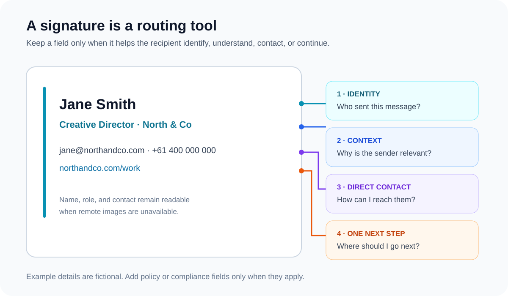

Email Signature Best Practices: A Practical 2026 Checklist
The short answer: a useful email signature identifies the sender, gives the recipient one clear next route, and still makes sense when images are hidden. Keep essential details as text, use restrained email-safe HTML, and approve the received message—not the editor preview.
Think of a signature as a routing tool, not a miniature home page. Every field should answer one of four questions: who sent this, why are they relevant, how can I reach them, and what is the most useful next step?

The practical email signature checklist
| Job | Usually include | Add only when useful |
|---|---|---|
| Identity | Name | Pronunciation, preferred name, or credentials the recipient needs |
| Context | Role and organisation | Team, region, licence, course, or research group |
| Contact | One direct reply or contact route | Phone, website, office hours, or location |
| Next step | Nothing by default | One current portfolio, booking page, profile, or campaign link |
An email address can still be useful when a message is forwarded or printed, but it is not mandatory in every conversation. A postal address, legal notice, licence number, or company registration detail belongs only when policy, regulation, or recipient context requires it.
What to leave out
- Inactive profiles: a current website or LinkedIn profile is more useful than a row of abandoned accounts.
- Several competing calls to action: choose the one route that matches the emails you send most often.
- Essential details inside one image: recipients may block remote images, and screen readers need meaningful text.
- Claims, awards, or testimonials without context: a signature is a poor place for evidence-heavy marketing.
- Long disclaimers by habit: follow your organisation’s legal or compliance policy instead of copying a generic block.
- Quotes and decorative banners: keep them only when they serve a deliberate communication purpose.
Design for hierarchy before colour
Make the sender’s name easy to find, then the role or organisation, then contact details. Use weight, spacing, and a modest size change to create hierarchy. Colour should reinforce that order, not carry it by itself.
- Use readable system-font fallbacks and expect typography to vary between devices.
- Keep text contrast strong and do not rely on coloured icons alone to explain a destination.
- Use a professional photo or logo only when it helps recognition or brand context.
- Give linked icons descriptive alt text and keep the destination useful even if the icon is hidden.
- Check the layout in a narrow mobile inbox; do not assume a desktop preview represents the received message.
For profile selection, markup, and link testing, use the dedicated guide to social media icons in email signatures. For layouts by role and purpose, compare the professional email signature examples or the narrower student examples.
Use conservative HTML and keep the fallback readable
The current Email Signature Generator uses table-based layout, inline styles, explicit image dimensions, public HTTPS image URLs, and escaped text and links. Those are product implementation choices made to reduce common compatibility failures; they are not a promise that every email client will render identical pixels.
- Keep the layout simple: avoid depending on browser-only layout features such as CSS grid.
- Put critical styles inline: copied signatures cannot rely on the site’s stylesheet.
- Set image dimensions: reserve space before a remote image loads.
- Use public HTTPS URLs: local files, private drives, and temporary preview URLs will not work for recipients.
- Preserve a text path: name, role, and core contact details should remain understandable with images blocked.
If you already have signature HTML, the email signature health check can flag insecure image URLs, missing alt text, oversized markup, trackers, and fragile patterns before installation.
Gmail and Outlook require different setup paths
Google’s current Gmail guidance says desktop signatures can include formatted text and images, supports multiple signatures, and limits a signature to 10,000 characters; an image also counts toward that limit. See Google’s official Gmail signature instructions and our step-by-step Gmail guide.
Microsoft maintains separate flows for new Outlook, classic Outlook, Outlook on the web, Outlook.com, and Outlook for Mac. Its current guidance supports multiple signatures plus separate defaults for new messages and replies or forwards. See Microsoft’s official Outlook signature instructions and our version-specific Outlook guide.
Compatibility boundary: “works in the editor” is not the same as “works in the received email.” Different Outlook versions, Gmail surfaces, mobile apps, forwarding, image policies, and dark mode can all change the result.
Test the received signature in five conditions
- Send to a Gmail desktop inbox and inspect text, images, and links.
- Send to the Outlook version your recipients or team actually use.
- Open a received message in a narrow mobile inbox and check for horizontal overflow.
- Reply and forward once to see whether the signature remains readable in a thread.
- View the message with remote images unavailable and confirm the text fallback still works.
Click every link in the received message. Check the exact destination, not just whether a browser tab opens. Repeat the test when a profile URL, hosted image, template, email client, or organisation policy changes.
Choose the tool after you know the job
An individual who needs one portable signature has a different problem from an IT team that needs central deployment, controlled updates, and organisation-wide policy. The free versus paid generator guide separates those buying decisions without assuming a subscription is always better.
Build a signature, then test the received result
Choose from 24 templates, keep only the details your recipient needs, and preview the signature before deciding whether to unlock copy and hosted images.
Create Your Email Signature